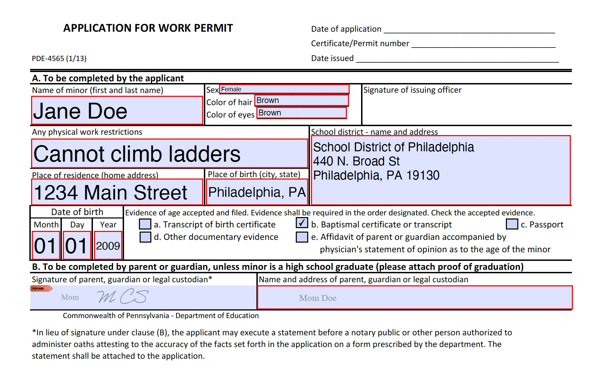

Checklist for Success
To apply for your work permit, you will need to show proof of your age. The following documents can be used:
- Birth Certificate (copies are acceptable)
- State ID or Driver's License
- Passport
- Baptismal Certificate
- Student ID Card (must include date of birth)
- Medical Insurance Card (must include date of birth)
You will also need to fill out a Work Permit Application:
